<title>Sloths Art Check</title>
<meta name="viewport" content="width=device-width,initial-scale=1">
<meta name="claude:viewport-fit-sides" content="cover">
<link rel="stylesheet" href="https://fonts.googleapis.com/css2?family=Fraunces:opsz,wght@9..144,600&family=Inter:wght@400;600;700&family=JetBrains+Mono&display=swap">
<style>
/* layout: one column of case studies; each case has a setting switcher that swaps every picture in place (flip to compare) */
:root{--bg:#f3f5f1;--panel:#ffffff;--fg:#1d241d;--muted:#5d6a5c;--line:#d5dbd2;--accent:#2f6b3a;--warn:#9a5b00;--ok:#2f6b3a;
--display:'Fraunces',Georgia,serif;--body:'Inter',system-ui,sans-serif;--mono:'JetBrains Mono',ui-monospace,monospace;color-scheme:light}
@media (prefers-color-scheme:dark){:root:not([data-theme="light"]){--bg:#141914;--panel:#1c231c;--fg:#e6ece4;--muted:#9aa898;--line:#2f3a2f;--accent:#8fd19b;--warn:#e7b25a;--ok:#8fd19b;color-scheme:dark}}
:root[data-theme="dark"]{--bg:#141914;--panel:#1c231c;--fg:#e6ece4;--muted:#9aa898;--line:#2f3a2f;--accent:#8fd19b;--warn:#e7b25a;--ok:#8fd19b;color-scheme:dark}
body{background:var(--bg);color:var(--fg);font:15px/1.55 var(--body);padding-left:max(16px,env(safe-area-inset-left,0px));padding-right:max(16px,env(safe-area-inset-right,0px));padding-block:20px 48px}
main{max-width:980px;margin:0 auto;display:flex;flex-direction:column;gap:28px}
h1,h2{font-family:var(--display);font-weight:600;text-wrap:balance;margin:0}
h1{font-size:2rem;line-height:1.15}h2{font-size:1.35rem}
p{margin:0;max-width:68ch}.muted{color:var(--muted)}
.lede{display:flex;flex-direction:column;gap:10px}
.case,.panel{background:var(--panel);border:1px solid var(--line);border-radius:10px;padding:16px;display:flex;flex-direction:column;gap:12px;min-width:0}
.seg{display:flex;flex-wrap:wrap;gap:6px}
.seg button{font:600 13px var(--body);border:1px solid var(--line);background:transparent;color:var(--fg);border-radius:999px;padding:8px 14px;min-height:40px;cursor:pointer}
.seg button[aria-pressed="true"]{background:var(--accent);border-color:var(--accent);color:var(--panel)}
.seg button:focus-visible{outline:2px solid var(--accent);outline-offset:2px}
.views{display:grid;grid-template-columns:repeat(auto-fit,minmax(260px,1fr));gap:12px}
figure{margin:0;display:flex;flex-direction:column;gap:6px;min-width:0}
figure img{display:block;width:100%;height:auto;border-radius:6px;background:#2c3b2c;image-rendering:auto}
figure.px img{image-rendering:pixelated}
figcaption{font-size:12px;color:var(--muted)}
.stat{font:13px var(--mono);font-variant-numeric:tabular-nums}
.tw{overflow-x:auto}
table{border-collapse:collapse;font-variant-numeric:tabular-nums;font-size:13px;width:100%}
th,td{text-align:right;padding:6px 8px;border-bottom:1px solid var(--line);white-space:nowrap}
th:first-child,td:first-child{text-align:left}
th{font-weight:600;color:var(--muted);font-size:12px;letter-spacing:.03em;text-transform:uppercase}
.pick{color:var(--ok);font-weight:700}
audio{width:100%}
.clips{display:grid;grid-template-columns:repeat(auto-fit,minmax(220px,1fr));gap:10px}
td:first-child{white-space:normal;overflow-wrap:anywhere}
summary{cursor:pointer;font-weight:600;min-height:44px;display:flex;align-items:center}
.verdict{font:600 15px var(--body);border-left:4px solid var(--ok);padding:8px 12px;background:var(--panel)}
.kpis{display:grid;grid-template-columns:repeat(auto-fit,minmax(150px,1fr));gap:10px}
.kpi{background:var(--panel);border:1px solid var(--line);border-radius:10px;padding:12px}
.kpi b{display:block;font:600 1.5rem var(--display)}.kpi span{font-size:12px;color:var(--muted)}
</style>
<main>
<section class="lede"><h1>Did q82 lose anything?</h1>
<p>Task AS-2, branch t-assets-art82. Your rule: every picture stored above about q83 goes to q82, except the dark ones, which stay exactly as shipped. I re-encoded 218 pictures and measured every one against its original, pixel by pixel, on the parts you can see.</p>
<p class="verdict">Nothing visible lost: yes. Every one of the 218 re-encoded pictures scores at least as well as the q82 pictures you already looked at and passed (the gear icon, Pokey&#x27;s story picture, the World 2 backdrop), on every score. Anything that scored worse, and every dark picture, stays exactly as shipped.</p></section>
<section class="kpis"><div class="kpi"><b>8.6 MB</b><span>smaller (art only)</span></div><div class="kpi"><b>179.4 MB</b><span>app estimate (today 188.0 MB)</span></div>
<div class="kpi"><b>218</b><span>re-encoded at q82</span></div><div class="kpi"><b>107</b><span>dark, kept as shipped</span></div><div class="kpi"><b>111</b><span>flagged by a score, kept as shipped</span></div><div class="kpi"><b>0.980</b><span>worst SSIM (1.0 = identical)</span></div></section>
<section class="panel"><h2>The black picture</h2><p>It is World 10&#x27;s far storm sky (backdrops/w10-far.webp): 72% of it is near black, and 58% is smooth dark sky with no texture. At q82 and q75 the smooth dark gradient breaks into soft 16 px blocks and blotches (WebP&#x27;s macroblocks), most visible right under the lightning. Its scores at q82 look fine on paper (SSIM 0.992, PSNR 45 dB), because those scores forgive errors in flat dark areas, so I did not trust them alone: the dark rule and SSIMULACRA2 (75.2, the only score that marks it worse than the pictures you passed) catch it.</p></section>
<section class="panel"><h2>How I checked</h2><p>Each q82 picture was decoded and compared with its original on the parts you can see (alpha above zero; transparency is copied losslessly and checked identical). Four scores: SSIM (1.0 = identical), PSNR, the worst 32 px tile&#x27;s SSIM, the worst dark tile&#x27;s error, and SSIMULACRA2 (a perceptual score, 90 = indistinguishable, 80 = not noticeable at normal distance). The pass marks are set by your own eye: a picture is flagged and kept as shipped if any score is worse than the worst q82 picture you passed on the AS-1 page (SSIM 0.98, worst tile 0.90, PSNR 35 dB, dark tile 36.5 dB, SSIMULACRA2 78.5), or if it has smooth dark areas as damaged as the black picture&#x27;s. Sizes are in the same MB as the AS-1 page.</p></section>
<p class="muted">The 8 pictures that changed most, worst first. Tap Original and q82 to flip both views in place.</p>
<section class="case" id="w1"><h2>flora/heartbloom-bloom.webp</h2>
<p class="stat">345x239 · 18 KB → 12 KB · SSIM 0.9801 · worst tile SSIM 0.970 · PSNR 38.6 dB · dark tile PSNR 39.2 dB</p>
<div class="seg" role="group" aria-label="Version"><button data-k="w1" data-v="original" aria-pressed="true">Original</button><button data-k="w1" data-v="q82" aria-pressed="false">q82</button></div>
<div class="views"><figure><figcaption>Phone size (whole picture, at most 360 pt wide, never enlarged)</figcaption></figure>
<figure class="px">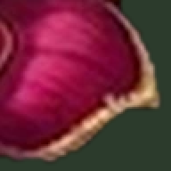<figcaption>Its worst 96 px region (x 249, y 128) at 3x</figcaption></figure></div></section>
<section class="case" id="w2"><h2>w7slide/obstacles.webp</h2>
<p class="stat">2048x902 · 134 KB → 86 KB · SSIM 0.9801 · worst tile SSIM 0.952 · PSNR 37.3 dB · dark tile PSNR 38.3 dB</p>
<div class="seg" role="group" aria-label="Version"><button data-k="w2" data-v="original" aria-pressed="true">Original</button><button data-k="w2" data-v="q82" aria-pressed="false">q82</button></div>
<div class="views"><figure>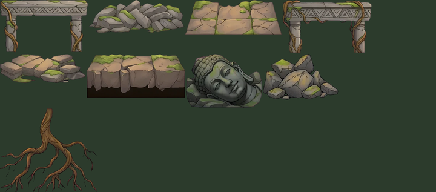<figcaption>Phone size (whole picture, at most 360 pt wide, never enlarged)</figcaption></figure>
<figure class="px">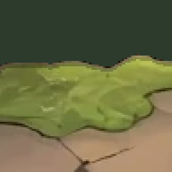<figcaption>Its worst 96 px region (x 448, y 224) at 3x</figcaption></figure></div></section>
<section class="case" id="w3"><h2>story/hd/guard-1.webp</h2>
<p class="stat">1862x1790 · 518 KB → 430 KB · SSIM 0.9803 · worst tile SSIM 0.965 · PSNR 39.6 dB · dark tile PSNR 38.7 dB</p>
<div class="seg" role="group" aria-label="Version"><button data-k="w3" data-v="original" aria-pressed="true">Original</button><button data-k="w3" data-v="q82" aria-pressed="false">q82</button></div>
<div class="views"><figure>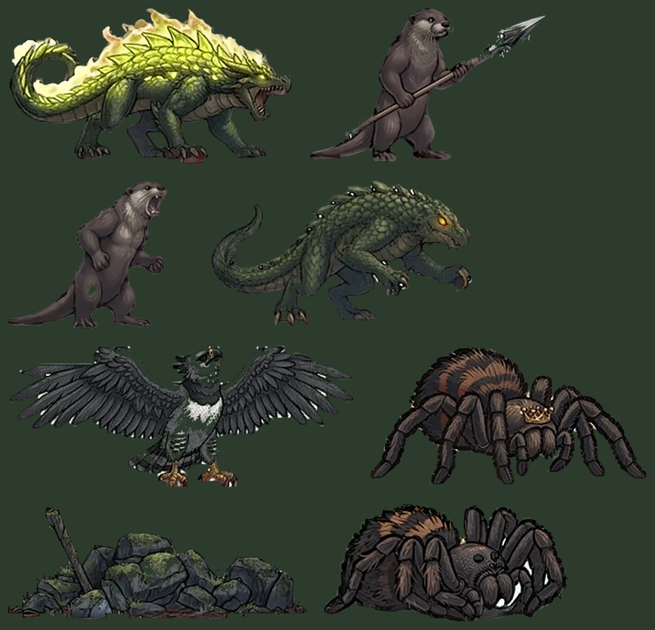<figcaption>Phone size (whole picture, at most 360 pt wide, never enlarged)</figcaption></figure>
<figure class="px">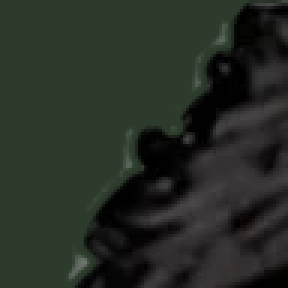<figcaption>Its worst 96 px region (x 960, y 1472) at 3x</figcaption></figure></div></section>
<section class="case" id="w4"><h2>w7/vine-anchors.webp</h2>
<p class="stat">2048x527 · 117 KB → 90 KB · SSIM 0.9805 · worst tile SSIM 0.959 · PSNR 36.9 dB · dark tile PSNR - dB</p>
<div class="seg" role="group" aria-label="Version"><button data-k="w4" data-v="original" aria-pressed="true">Original</button><button data-k="w4" data-v="q82" aria-pressed="false">q82</button></div>
<div class="views"><figure>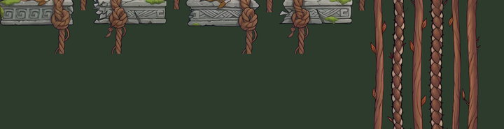<figcaption>Phone size (whole picture, at most 360 pt wide, never enlarged)</figcaption></figure>
<figure class="px">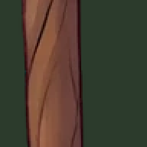<figcaption>Its worst 96 px region (x 1888, y 224) at 3x</figcaption></figure></div></section>
<section class="case" id="w5"><h2>props/gates/w1.webp</h2>
<p class="stat">1010x640 · 98 KB → 69 KB · SSIM 0.9810 · worst tile SSIM 0.937 · PSNR 39.1 dB · dark tile PSNR 38.4 dB</p>
<div class="seg" role="group" aria-label="Version"><button data-k="w5" data-v="original" aria-pressed="true">Original</button><button data-k="w5" data-v="q82" aria-pressed="false">q82</button></div>
<div class="views"><figure>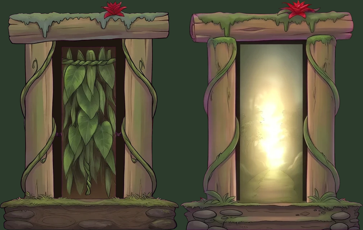<figcaption>Phone size (whole picture, at most 360 pt wide, never enlarged)</figcaption></figure>
<figure class="px">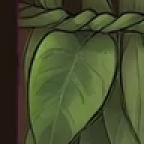<figcaption>Its worst 96 px region (x 160, y 160) at 3x</figcaption></figure></div></section>
<section class="case" id="w6"><h2>props/gates/w8.webp</h2>
<p class="stat">974x640 · 91 KB → 68 KB · SSIM 0.9810 · worst tile SSIM 0.943 · PSNR 39.8 dB · dark tile PSNR 39.4 dB</p>
<div class="seg" role="group" aria-label="Version"><button data-k="w6" data-v="original" aria-pressed="true">Original</button><button data-k="w6" data-v="q82" aria-pressed="false">q82</button></div>
<div class="views"><figure>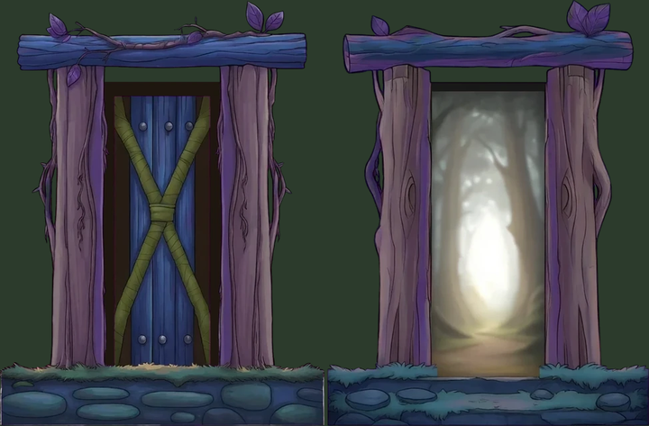<figcaption>Phone size (whole picture, at most 360 pt wide, never enlarged)</figcaption></figure>
<figure class="px">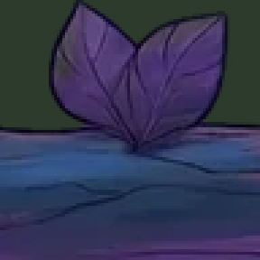<figcaption>Its worst 96 px region (x 832, y 0) at 3x</figcaption></figure></div></section>
<section class="case" id="w7"><h2>w6to10/props-made/w8var.webp</h2>
<p class="stat">2048x866 · 93 KB → 69 KB · SSIM 0.9813 · worst tile SSIM 0.945 · PSNR 39.4 dB · dark tile PSNR 36.9 dB</p>
<div class="seg" role="group" aria-label="Version"><button data-k="w7" data-v="original" aria-pressed="true">Original</button><button data-k="w7" data-v="q82" aria-pressed="false">q82</button></div>
<div class="views"><figure>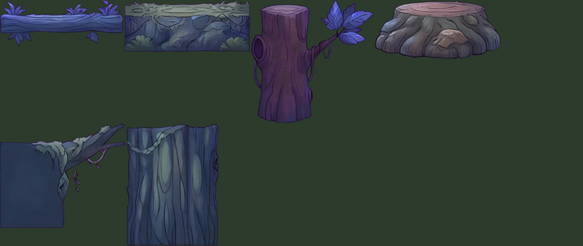<figcaption>Phone size (whole picture, at most 360 pt wide, never enlarged)</figcaption></figure>
<figure class="px">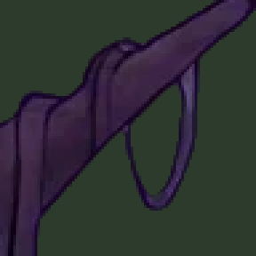<figcaption>Its worst 96 px region (x 1088, y 128) at 3x</figcaption></figure></div></section>
<section class="case" id="w8"><h2>w6to10/props-made/w7c.webp</h2>
<p class="stat">2048x875 · 126 KB → 99 KB · SSIM 0.9818 · worst tile SSIM 0.950 · PSNR 36.2 dB · dark tile PSNR - dB</p>
<div class="seg" role="group" aria-label="Version"><button data-k="w8" data-v="original" aria-pressed="true">Original</button><button data-k="w8" data-v="q82" aria-pressed="false">q82</button></div>
<div class="views"><figure>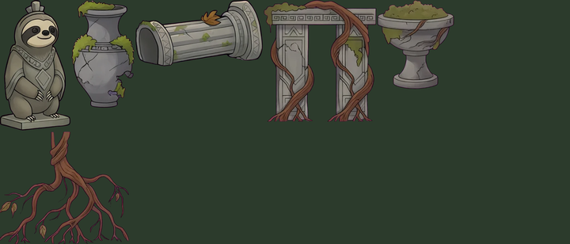<figcaption>Phone size (whole picture, at most 360 pt wide, never enlarged)</figcaption></figure>
<figure class="px">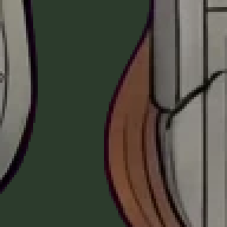<figcaption>Its worst 96 px region (x 928, y 128) at 3x</figcaption></figure></div></section>
<section class="panel"><h2>Flagged by a score and kept as shipped</h2><details><summary>Show all 111</summary><div class="tw"><table><thead><tr><th>Picture</th><th>SSIM</th><th>Worst tile</th><th>PSNR</th><th>Dark tile</th><th>Why</th></tr></thead><tbody><tr><td>enemies/monarch-atlas.webp</td><td>0.9666</td><td>0.930</td><td>36.7</td><td>37.2</td><td>SSIM &lt; 0.98</td></tr><tr><td>enemies/drake-atlas.webp</td><td>0.9696</td><td>0.929</td><td>35.3</td><td>35.2</td><td>SSIM &lt; 0.98, dark tile &lt; 36.5 dB</td></tr><tr><td>w7/crumble.webp</td><td>0.9705</td><td>0.942</td><td>36.1</td><td>36.4</td><td>SSIM &lt; 0.98, dark tile &lt; 36.5 dB</td></tr><tr><td>w6to10/gemini/w6-hides-arches.webp</td><td>0.9718</td><td>0.938</td><td>36.2</td><td>41.2</td><td>SSIM &lt; 0.98</td></tr><tr><td>w6to10/props-made/w6var.webp</td><td>0.9732</td><td>0.924</td><td>37.8</td><td>44.9</td><td>SSIM &lt; 0.98</td></tr><tr><td>w7slide/flume-props.webp</td><td>0.9741</td><td>0.921</td><td>34.5</td><td>35.8</td><td>SSIM &lt; 0.98, PSNR &lt; 35 dB, dark tile &lt; 36.5 dB, SSIMULACRA2 &lt; 78.5</td></tr><tr><td>enemies/reaver-atlas.webp</td><td>0.9741</td><td>0.948</td><td>36.1</td><td>-</td><td>SSIM &lt; 0.98</td></tr><tr><td>proto/crown.webp</td><td>0.9748</td><td>0.959</td><td>39.9</td><td>41.8</td><td>SSIM &lt; 0.98</td></tr><tr><td>props/gates/w3.webp</td><td>0.9758</td><td>0.948</td><td>39.2</td><td>37.3</td><td>SSIM &lt; 0.98</td></tr><tr><td>w7slide/flume-cave.webp</td><td>0.9762</td><td>0.917</td><td>36.2</td><td>36.0</td><td>SSIM &lt; 0.98, dark tile &lt; 36.5 dB, smooth dark area, dark tile as bad as the black picture, SSIMULACRA2 &lt; 78.5</td></tr><tr><td>w6to10/props-made/w8c.webp</td><td>0.9765</td><td>0.945</td><td>37.0</td><td>40.6</td><td>SSIM &lt; 0.98</td></tr><tr><td>w6to10/props-made/w6balt.webp</td><td>0.9769</td><td>0.950</td><td>39.0</td><td>-</td><td>SSIM &lt; 0.98</td></tr><tr><td>w6to10/gemini/w8a-puzzle.webp</td><td>0.9773</td><td>0.955</td><td>38.3</td><td>42.0</td><td>SSIM &lt; 0.98</td></tr><tr><td>enemies/croc-atlas.webp</td><td>0.9775</td><td>0.950</td><td>35.6</td><td>34.8</td><td>SSIM &lt; 0.98, dark tile &lt; 36.5 dB</td></tr><tr><td>w7slide/chute-wall-roots.webp</td><td>0.9779</td><td>0.953</td><td>38.9</td><td>-</td><td>SSIM &lt; 0.98</td></tr><tr><td>w6to10/props-made/w8roost-b.webp</td><td>0.9780</td><td>0.938</td><td>37.8</td><td>38.0</td><td>SSIM &lt; 0.98</td></tr><tr><td>w7slide/chamber.webp</td><td>0.9781</td><td>0.954</td><td>40.3</td><td>38.2</td><td>SSIM &lt; 0.98, SSIMULACRA2 &lt; 78.5</td></tr><tr><td>proto/props3-atlas.webp</td><td>0.9783</td><td>0.953</td><td>37.0</td><td>-</td><td>SSIM &lt; 0.98</td></tr><tr><td>w6to10/props-made/w7c-b.webp</td><td>0.9785</td><td>0.943</td><td>36.1</td><td>41.0</td><td>SSIM &lt; 0.98</td></tr><tr><td>characters/cels-2.webp</td><td>0.9785</td><td>0.917</td><td>37.7</td><td>35.6</td><td>SSIM &lt; 0.98, dark tile &lt; 36.5 dB</td></tr><tr><td>w1to4art/w1-cut.webp</td><td>0.9787</td><td>0.953</td><td>37.4</td><td>41.8</td><td>SSIM &lt; 0.98</td></tr><tr><td>characters/dot-perch-atlas.webp</td><td>0.9789</td><td>0.959</td><td>36.1</td><td>-</td><td>SSIM &lt; 0.98</td></tr><tr><td>flora/heartbloom-epic.webp</td><td>0.9789</td><td>0.967</td><td>38.2</td><td>41.5</td><td>SSIM &lt; 0.98</td></tr><tr><td>pickups/petal.webp</td><td>0.9791</td><td>0.971</td><td>35.3</td><td>-</td><td>SSIM &lt; 0.98, SSIMULACRA2 &lt; 78.5</td></tr><tr><td>proto/props2-atlas.webp</td><td>0.9791</td><td>0.956</td><td>38.0</td><td>38.8</td><td>SSIM &lt; 0.98</td></tr><tr><td>kits/w8.webp</td><td>0.9791</td><td>0.943</td><td>37.3</td><td>36.0</td><td>SSIM &lt; 0.98, dark tile &lt; 36.5 dB, SSIMULACRA2 &lt; 78.5</td></tr><tr><td>w6to10/props-made/w8roost.webp</td><td>0.9791</td><td>0.928</td><td>37.7</td><td>39.0</td><td>SSIM &lt; 0.98</td></tr><tr><td>icons/heart.webp</td><td>0.9798</td><td>0.969</td><td>36.9</td><td>41.1</td><td>SSIM &lt; 0.98</td></tr><tr><td>flora/birds-atlas.webp</td><td>0.9798</td><td>0.951</td><td>35.0</td><td>-</td><td>SSIM &lt; 0.98, PSNR &lt; 35 dB</td></tr><tr><td>icons/home.webp</td><td>0.9799</td><td>0.970</td><td>35.1</td><td>38.8</td><td>SSIM &lt; 0.98</td></tr><tr><td>w8/lantern.webp</td><td>0.9801</td><td>0.943</td><td>37.4</td><td>41.4</td><td>SSIMULACRA2 &lt; 78.5</td></tr><tr><td>props/gates/w2.webp</td><td>0.9804</td><td>0.940</td><td>40.0</td><td>-</td><td>SSIMULACRA2 &lt; 78.5</td></tr><tr><td>story/ground/w1.webp</td><td>0.9806</td><td>0.964</td><td>40.7</td><td>37.6</td><td>smooth dark area, dark tile as bad as the black picture, SSIMULACRA2 &lt; 78.5</td></tr><tr><td>props/pits/w1-bed.webp</td><td>0.9809</td><td>0.969</td><td>37.4</td><td>-</td><td>SSIMULACRA2 &lt; 78.5</td></tr><tr><td>w7slide/chute-far-dark.webp</td><td>0.9811</td><td>0.943</td><td>40.2</td><td>38.5</td><td>SSIMULACRA2 &lt; 78.5</td></tr><tr><td>props/dressnew-w6.webp</td><td>0.9816</td><td>0.950</td><td>36.3</td><td>35.9</td><td>dark tile &lt; 36.5 dB</td></tr><tr><td>story/plates/council.webp</td><td>0.9816</td><td>0.962</td><td>41.2</td><td>40.6</td><td>SSIMULACRA2 &lt; 78.5</td></tr><tr><td>props/dressnew-w4.webp</td><td>0.9817</td><td>0.941</td><td>35.8</td><td>35.7</td><td>dark tile &lt; 36.5 dB</td></tr><tr><td>enemies/sovereign-atlas.webp</td><td>0.9819</td><td>0.961</td><td>36.0</td><td>36.1</td><td>dark tile &lt; 36.5 dB</td></tr><tr><td>w7slide/chute-end-light.webp</td><td>0.9820</td><td>0.947</td><td>40.2</td><td>39.6</td><td>SSIMULACRA2 &lt; 78.5</td></tr><tr><td>enemies/spider-atlas.webp</td><td>0.9820</td><td>0.952</td><td>33.0</td><td>-</td><td>PSNR &lt; 35 dB</td></tr><tr><td>pickups/ribbon.webp</td><td>0.9824</td><td>0.977</td><td>35.4</td><td>-</td><td>SSIMULACRA2 &lt; 78.5</td></tr><tr><td>enemies/venom-atlas.webp</td><td>0.9825</td><td>0.952</td><td>34.8</td><td>-</td><td>PSNR &lt; 35 dB</td></tr><tr><td>kits/w9.webp</td><td>0.9827</td><td>0.946</td><td>38.7</td><td>33.9</td><td>dark tile &lt; 36.5 dB, smooth dark area, dark tile as bad as the black picture</td></tr><tr><td>icons/clubs.webp</td><td>0.9831</td><td>0.978</td><td>33.4</td><td>-</td><td>PSNR &lt; 35 dB, SSIMULACRA2 &lt; 78.5</td></tr><tr><td>backdrops/w7dusk-near.webp</td><td>0.9831</td><td>0.955</td><td>41.2</td><td>38.1</td><td>smooth dark area, dark tile as bad as the black picture, SSIMULACRA2 &lt; 78.5</td></tr><tr><td>icons/save.webp</td><td>0.9833</td><td>0.975</td><td>35.2</td><td>39.3</td><td>SSIMULACRA2 &lt; 78.5</td></tr><tr><td>w7slide/chute-wall-glyph.webp</td><td>0.9838</td><td>0.966</td><td>41.2</td><td>-</td><td>SSIMULACRA2 &lt; 78.5</td></tr><tr><td>characters/cels-1.webp</td><td>0.9838</td><td>0.951</td><td>38.3</td><td>36.0</td><td>dark tile &lt; 36.5 dB</td></tr><tr><td>ui/leaf-token.webp</td><td>0.9839</td><td>0.977</td><td>37.2</td><td>-</td><td>SSIMULACRA2 &lt; 78.5</td></tr><tr><td>title/slab.webp</td><td>0.9839</td><td>0.969</td><td>38.5</td><td>-</td><td>SSIMULACRA2 &lt; 78.5</td></tr><tr><td>backdrops/w10dusk-far.webp</td><td>0.9839</td><td>0.929</td><td>41.8</td><td>37.5</td><td>smooth dark area, dark tile as bad as the black picture, SSIMULACRA2 &lt; 78.5</td></tr><tr><td>icons/story.webp</td><td>0.9843</td><td>0.971</td><td>34.7</td><td>37.7</td><td>PSNR &lt; 35 dB, SSIMULACRA2 &lt; 78.5</td></tr><tr><td>props/gates/w9.webp</td><td>0.9843</td><td>0.960</td><td>40.2</td><td>37.4</td><td>smooth dark area, dark tile as bad as the black picture</td></tr><tr><td>pickups/bell.webp</td><td>0.9850</td><td>0.969</td><td>36.4</td><td>-</td><td>SSIMULACRA2 &lt; 78.5</td></tr><tr><td>icons/paw.webp</td><td>0.9851</td><td>0.974</td><td>35.2</td><td>-</td><td>SSIMULACRA2 &lt; 78.5</td></tr><tr><td>backdrops/w4mist-near.webp</td><td>0.9854</td><td>0.957</td><td>41.7</td><td>37.9</td><td>smooth dark area, dark tile as bad as the black picture</td></tr><tr><td>characters/cels-3.webp</td><td>0.9855</td><td>0.948</td><td>39.0</td><td>36.0</td><td>dark tile &lt; 36.5 dB</td></tr><tr><td>backdrops/w2evening-mid.webp</td><td>0.9856</td><td>0.963</td><td>41.9</td><td>37.8</td><td>smooth dark area, dark tile as bad as the black picture</td></tr><tr><td>icons/scenes.webp</td><td>0.9858</td><td>0.966</td><td>35.0</td><td>-</td><td>PSNR &lt; 35 dB, SSIMULACRA2 &lt; 78.5</td></tr><tr><td>icons/map.webp</td><td>0.9860</td><td>0.975</td><td>35.1</td><td>-</td><td>SSIMULACRA2 &lt; 78.5</td></tr><tr><td>flora/butterflies-atlas.webp</td><td>0.9861</td><td>0.959</td><td>34.4</td><td>-</td><td>PSNR &lt; 35 dB</td></tr><tr><td>enemies/snake2-atlas.webp</td><td>0.9862</td><td>0.976</td><td>34.8</td><td>-</td><td>PSNR &lt; 35 dB</td></tr><tr><td>characters/cels-0.webp</td><td>0.9863</td><td>0.964</td><td>38.4</td><td>35.9</td><td>dark tile &lt; 36.5 dB</td></tr><tr><td>icons/leaf.webp</td><td>0.9864</td><td>0.981</td><td>35.0</td><td>-</td><td>PSNR &lt; 35 dB, SSIMULACRA2 &lt; 78.5</td></tr><tr><td>backdrops/w1-mid.webp</td><td>0.9865</td><td>0.958</td><td>42.3</td><td>37.8</td><td>smooth dark area, dark tile as bad as the black picture</td></tr><tr><td>backdrops/w8sunset-far.webp</td><td>0.9867</td><td>0.929</td><td>42.4</td><td>38.2</td><td>smooth dark area, dark tile as bad as the black picture, SSIMULACRA2 &lt; 78.5</td></tr><tr><td>backdrops/w4terraces-far.webp</td><td>0.9867</td><td>0.866</td><td>40.9</td><td>36.2</td><td>worst tile SSIM &lt; 0.90, dark tile &lt; 36.5 dB, SSIMULACRA2 &lt; 78.5</td></tr><tr><td>icons/sound.webp</td><td>0.9869</td><td>0.978</td><td>35.9</td><td>-</td><td>SSIMULACRA2 &lt; 78.5</td></tr><tr><td>backdrops/w9dawn-far.webp</td><td>0.9872</td><td>0.944</td><td>42.2</td><td>39.0</td><td>SSIMULACRA2 &lt; 78.5</td></tr><tr><td>backdrops/w5twi2-far.webp</td><td>0.9874</td><td>0.930</td><td>41.3</td><td>37.8</td><td>SSIMULACRA2 &lt; 78.5</td></tr><tr><td>backdrops/w6-mid.webp</td><td>0.9874</td><td>0.963</td><td>42.2</td><td>39.2</td><td>smooth dark area, dark tile as bad as the black picture</td></tr><tr><td>icons/shimmy.webp</td><td>0.9876</td><td>0.979</td><td>35.0</td><td>-</td><td>SSIMULACRA2 &lt; 78.5</td></tr><tr><td>w7slide/chute-floor-1groove.webp</td><td>0.9876</td><td>0.970</td><td>43.3</td><td>-</td><td>SSIMULACRA2 &lt; 78.5</td></tr><tr><td>enemies/frog-atlas.webp</td><td>0.9878</td><td>0.965</td><td>33.4</td><td>-</td><td>PSNR &lt; 35 dB</td></tr><tr><td>w7slide/chute-ceiling.webp</td><td>0.9878</td><td>0.961</td><td>44.1</td><td>41.2</td><td>SSIMULACRA2 &lt; 78.5</td></tr><tr><td>enemies/snake-atlas.webp</td><td>0.9879</td><td>0.973</td><td>34.0</td><td>-</td><td>PSNR &lt; 35 dB</td></tr><tr><td>backdrops/w1c-mid.webp</td><td>0.9881</td><td>0.954</td><td>42.5</td><td>38.9</td><td>smooth dark area, dark tile as bad as the black picture</td></tr><tr><td>w7slide/chute-floor-3lane.webp</td><td>0.9882</td><td>0.966</td><td>43.7</td><td>-</td><td>SSIMULACRA2 &lt; 78.5</td></tr><tr><td>icons/glide.webp</td><td>0.9884</td><td>0.979</td><td>34.7</td><td>-</td><td>PSNR &lt; 35 dB, SSIMULACRA2 &lt; 78.5</td></tr><tr><td>enemies/golem-atlas.webp</td><td>0.9885</td><td>0.968</td><td>34.6</td><td>36.3</td><td>PSNR &lt; 35 dB, dark tile &lt; 36.5 dB</td></tr><tr><td>backdrops/w2evening-near.webp</td><td>0.9886</td><td>0.967</td><td>41.4</td><td>39.1</td><td>smooth dark area, dark tile as bad as the black picture</td></tr><tr><td>w6to10/props-made/w8fungus.webp</td><td>0.9886</td><td>0.980</td><td>38.4</td><td>-</td><td>SSIMULACRA2 &lt; 78.5</td></tr><tr><td>icons/pouch.webp</td><td>0.9887</td><td>0.986</td><td>34.5</td><td>-</td><td>PSNR &lt; 35 dB, SSIMULACRA2 &lt; 78.5</td></tr><tr><td>backdrops/w10after-far.webp</td><td>0.9887</td><td>0.948</td><td>42.7</td><td>39.0</td><td>smooth dark area, dark tile as bad as the black picture, SSIMULACRA2 &lt; 78.5</td></tr><tr><td>backdrops/w9ash-far.webp</td><td>0.9889</td><td>0.956</td><td>42.8</td><td>37.9</td><td>smooth dark area, dark tile as bad as the black picture, SSIMULACRA2 &lt; 78.5</td></tr><tr><td>backdrops/w10gale-near.webp</td><td>0.9891</td><td>0.964</td><td>41.9</td><td>38.5</td><td>smooth dark area, dark tile as bad as the black picture</td></tr><tr><td>backdrops/w5dusk1-far.webp</td><td>0.9892</td><td>0.913</td><td>42.3</td><td>-</td><td>SSIMULACRA2 &lt; 78.5</td></tr><tr><td>pickups/scroll.webp</td><td>0.9895</td><td>0.980</td><td>35.3</td><td>-</td><td>SSIMULACRA2 &lt; 78.5</td></tr><tr><td>story/plates/w4-day.webp</td><td>0.9898</td><td>0.969</td><td>46.1</td><td>41.2</td><td>SSIMULACRA2 &lt; 78.5</td></tr><tr><td>icons/shrink.webp</td><td>0.9898</td><td>0.988</td><td>34.1</td><td>-</td><td>PSNR &lt; 35 dB, SSIMULACRA2 &lt; 78.5</td></tr><tr><td>story/plates/w1-dusk.webp</td><td>0.9900</td><td>0.978</td><td>45.5</td><td>44.8</td><td>SSIMULACRA2 &lt; 78.5</td></tr><tr><td>enemies/jaguar-atlas.webp</td><td>0.9902</td><td>0.973</td><td>34.2</td><td>-</td><td>PSNR &lt; 35 dB</td></tr><tr><td>backdrops/w1b-far.webp</td><td>0.9908</td><td>0.950</td><td>43.3</td><td>38.1</td><td>SSIMULACRA2 &lt; 78.5</td></tr><tr><td>icons/sparkle.webp</td><td>0.9908</td><td>0.989</td><td>33.3</td><td>-</td><td>PSNR &lt; 35 dB, SSIMULACRA2 &lt; 78.5</td></tr><tr><td>flora/petals.webp</td><td>0.9909</td><td>0.977</td><td>34.4</td><td>-</td><td>PSNR &lt; 35 dB, SSIMULACRA2 &lt; 78.5</td></tr><tr><td>icons/trophy.webp</td><td>0.9910</td><td>0.983</td><td>33.3</td><td>-</td><td>PSNR &lt; 35 dB, SSIMULACRA2 &lt; 78.5</td></tr><tr><td>icons/compass.webp</td><td>0.9912</td><td>0.988</td><td>34.0</td><td>-</td><td>PSNR &lt; 35 dB, SSIMULACRA2 &lt; 78.5</td></tr><tr><td>backdrops/w10storm-far.webp</td><td>0.9913</td><td>0.967</td><td>42.6</td><td>39.9</td><td>SSIMULACRA2 &lt; 78.5</td></tr><tr><td>w6to10/props-made/w7-plates.webp</td><td>0.9915</td><td>0.988</td><td>38.0</td><td>-</td><td>SSIMULACRA2 &lt; 78.5</td></tr><tr><td>pickups/teddy.webp</td><td>0.9916</td><td>0.990</td><td>34.9</td><td>-</td><td>PSNR &lt; 35 dB, SSIMULACRA2 &lt; 78.5</td></tr><tr><td>icons/journal.webp</td><td>0.9918</td><td>0.988</td><td>35.5</td><td>-</td><td>SSIMULACRA2 &lt; 78.5</td></tr><tr><td>enemies/ocelot-atlas.webp</td><td>0.9919</td><td>0.982</td><td>34.1</td><td>39.3</td><td>PSNR &lt; 35 dB</td></tr><tr><td>backdrops/w2-far.webp</td><td>0.9922</td><td>0.945</td><td>43.3</td><td>-</td><td>SSIMULACRA2 &lt; 78.5</td></tr><tr><td>icons/expand.webp</td><td>0.9923</td><td>0.995</td><td>34.7</td><td>-</td><td>PSNR &lt; 35 dB, SSIMULACRA2 &lt; 78.5</td></tr><tr><td>icons/cards.webp</td><td>0.9926</td><td>0.984</td><td>33.2</td><td>-</td><td>PSNR &lt; 35 dB, SSIMULACRA2 &lt; 78.5</td></tr><tr><td>backdrops/w4-far.webp</td><td>0.9927</td><td>0.935</td><td>44.0</td><td>-</td><td>SSIMULACRA2 &lt; 78.5</td></tr><tr><td>pickups/locket.webp</td><td>0.9929</td><td>0.982</td><td>36.7</td><td>-</td><td>SSIMULACRA2 &lt; 78.5</td></tr><tr><td>backdrops/w10night-far.webp</td><td>0.9935</td><td>0.962</td><td>42.4</td><td>46.1</td><td>SSIMULACRA2 &lt; 78.5</td></tr><tr><td>backdrops/w2mist-far.webp</td><td>0.9936</td><td>0.971</td><td>43.9</td><td>39.4</td><td>smooth dark area, dark tile as bad as the black picture</td></tr><tr><td>icons/medal.webp</td><td>0.9937</td><td>0.990</td><td>32.6</td><td>-</td><td>PSNR &lt; 35 dB, SSIMULACRA2 &lt; 78.5</td></tr></tbody></table></div></details></section>
<section class="panel"><h2>Dark pictures kept exactly as shipped</h2><p class="muted">Dark means half or more of the visible picture is near black (luma under 48 of 255), or a tenth or more of it is smooth dark area (flat 16 px blocks under 48 with almost no texture), which is what broke in the black picture.</p><details><summary>Show all 107</summary><div class="tw"><table><thead><tr><th>Picture</th><th>Near black</th><th>Smooth dark</th><th>Size</th></tr></thead><tbody><tr><td>backdrops/w9night-sky.webp</td><td>1.00</td><td>0.95</td><td>18 KB</td></tr><tr><td>backdrops/w6moon-mid.webp</td><td>0.97</td><td>0.31</td><td>191 KB</td></tr><tr><td>backdrops/w6dusk-mid.webp</td><td>0.95</td><td>0.33</td><td>217 KB</td></tr><tr><td>backdrops/w3-mid.webp</td><td>0.93</td><td>0.47</td><td>144 KB</td></tr><tr><td>backdrops/w5night-sky.webp</td><td>0.92</td><td>0.62</td><td>107 KB</td></tr><tr><td>backdrops/w3sinkhole-near.webp</td><td>0.92</td><td>0.56</td><td>92 KB</td></tr><tr><td>backdrops/w3sinkhole-mid.webp</td><td>0.89</td><td>0.34</td><td>134 KB</td></tr><tr><td>story/plates/w3-night.webp</td><td>0.89</td><td>0.79</td><td>108 KB</td></tr><tr><td>backdrops/w9night-near.webp</td><td>0.87</td><td>0.54</td><td>84 KB</td></tr><tr><td>backdrops/w6dusk-near.webp</td><td>0.86</td><td>0.30</td><td>137 KB</td></tr><tr><td>story/plates/w3-storm.webp</td><td>0.86</td><td>0.70</td><td>130 KB</td></tr><tr><td>backdrops/w8dawn-mid.webp</td><td>0.86</td><td>0.30</td><td>127 KB</td></tr><tr><td>backdrops/w3cavern-near.webp</td><td>0.85</td><td>0.56</td><td>74 KB</td></tr><tr><td>backdrops/w3cavern-mid.webp</td><td>0.84</td><td>0.52</td><td>151 KB</td></tr><tr><td>backdrops/w6moon-near.webp</td><td>0.83</td><td>0.30</td><td>135 KB</td></tr><tr><td>backdrops/w3-near.webp</td><td>0.82</td><td>0.46</td><td>177 KB</td></tr><tr><td>props/dot-bridges.webp</td><td>0.80</td><td>0.21</td><td>67 KB</td></tr><tr><td>story/ground/w3.webp</td><td>0.79</td><td>0.26</td><td>51 KB</td></tr><tr><td>enemies/tayra-atlas.webp</td><td>0.79</td><td>0.10</td><td>104 KB</td></tr><tr><td>enemies/eagle-anim.webp</td><td>0.79</td><td>0.16</td><td>1064 KB</td></tr><tr><td>backdrops/w7dawn-mid.webp</td><td>0.79</td><td>0.17</td><td>135 KB</td></tr><tr><td>backdrops/w9night-far.webp</td><td>0.79</td><td>0.52</td><td>236 KB</td></tr><tr><td>props/pits/w1-drop.webp</td><td>0.78</td><td>0.54</td><td>9 KB</td></tr><tr><td>enemies/eagle-atlas.webp</td><td>0.77</td><td>0.03</td><td>294 KB</td></tr><tr><td>backdrops/w9night-mid.webp</td><td>0.77</td><td>0.43</td><td>107 KB</td></tr><tr><td>backdrops/w10dusk-sky.webp</td><td>0.76</td><td>0.45</td><td>67 KB</td></tr><tr><td>enemies/harpy-atlas.webp</td><td>0.75</td><td>0.02</td><td>56 KB</td></tr><tr><td>story/ground/w10.webp</td><td>0.75</td><td>0.22</td><td>44 KB</td></tr><tr><td>props/w1-bootprint.webp</td><td>0.74</td><td>0.05</td><td>16 KB</td></tr><tr><td>backdrops/w10-mid.webp</td><td>0.74</td><td>0.36</td><td>143 KB</td></tr><tr><td>story/ground/w9.webp</td><td>0.74</td><td>0.19</td><td>47 KB</td></tr><tr><td>backdrops/w10-near.webp</td><td>0.73</td><td>0.38</td><td>169 KB</td></tr><tr><td>backdrops/w6dusk-far.webp</td><td>0.73</td><td>0.50</td><td>210 KB</td></tr><tr><td>backdrops/w10-far.webp</td><td>0.72</td><td>0.58</td><td>111 KB</td></tr><tr><td>backdrops/w3crystal-near.webp</td><td>0.71</td><td>0.47</td><td>85 KB</td></tr><tr><td>enemies/croc-anim.webp</td><td>0.70</td><td>0.00</td><td>1920 KB</td></tr><tr><td>flora/heartbloom-bud.webp</td><td>0.69</td><td>0.02</td><td>12 KB</td></tr><tr><td>backdrops/w9-near.webp</td><td>0.69</td><td>0.41</td><td>195 KB</td></tr><tr><td>props/pitwater/w3.webp</td><td>0.68</td><td>0.59</td><td>20 KB</td></tr><tr><td>w6to10/lairs/lair-queen-rage.webp</td><td>0.67</td><td>0.32</td><td>115 KB</td></tr><tr><td>w6to10/lairs/lair-queen-calm.webp</td><td>0.67</td><td>0.24</td><td>118 KB</td></tr><tr><td>enemies/prowler-atlas.webp</td><td>0.64</td><td>0.00</td><td>79 KB</td></tr><tr><td>backdrops/w3-far.webp</td><td>0.64</td><td>0.34</td><td>218 KB</td></tr><tr><td>backdrops/w8-mid.webp</td><td>0.64</td><td>0.26</td><td>410 KB</td></tr><tr><td>story/plates/tea.webp</td><td>0.63</td><td>0.41</td><td>321 KB</td></tr><tr><td>backdrops/w8dawn-near.webp</td><td>0.62</td><td>0.23</td><td>94 KB</td></tr><tr><td>backdrops/w3cavern-far.webp</td><td>0.60</td><td>0.29</td><td>278 KB</td></tr><tr><td>backdrops/w7dawn-far.webp</td><td>0.59</td><td>0.27</td><td>132 KB</td></tr><tr><td>story/ground/w7.webp</td><td>0.59</td><td>0.08</td><td>63 KB</td></tr><tr><td>story/hd/guard-0.webp</td><td>0.58</td><td>0.01</td><td>507 KB</td></tr><tr><td>backdrops/w8-far.webp</td><td>0.57</td><td>0.48</td><td>112 KB</td></tr><tr><td>enemies/thornbark-atlas.webp</td><td>0.57</td><td>0.00</td><td>363 KB</td></tr><tr><td>backdrops/w8-near.webp</td><td>0.56</td><td>0.24</td><td>223 KB</td></tr><tr><td>enemies/queen-atlas.webp</td><td>0.56</td><td>0.00</td><td>143 KB</td></tr><tr><td>story/ground/w8.webp</td><td>0.55</td><td>0.10</td><td>64 KB</td></tr><tr><td>backdrops/w8dawn-far.webp</td><td>0.55</td><td>0.34</td><td>152 KB</td></tr><tr><td>backdrops/w9-mid.webp</td><td>0.55</td><td>0.23</td><td>192 KB</td></tr><tr><td>enemies/ironclaw-atlas.webp</td><td>0.55</td><td>0.00</td><td>563 KB</td></tr><tr><td>props/pitwater/w1-mud-splash.webp</td><td>0.54</td><td>0.00</td><td>23 KB</td></tr><tr><td>props/pitwater/w1-creek.webp</td><td>0.54</td><td>0.53</td><td>17 KB</td></tr><tr><td>backdrops/w10storm-near.webp</td><td>0.53</td><td>0.25</td><td>91 KB</td></tr><tr><td>icons/key.webp</td><td>0.52</td><td>0.00</td><td>6 KB</td></tr><tr><td>backdrops/w10gale-mid.webp</td><td>0.52</td><td>0.15</td><td>79 KB</td></tr><tr><td>backdrops/w7-near.webp</td><td>0.52</td><td>0.09</td><td>254 KB</td></tr><tr><td>backdrops/w1sunrise-mid.webp</td><td>0.50</td><td>0.18</td><td>115 KB</td></tr><tr><td>backdrops/w6moon-far.webp</td><td>0.49</td><td>0.27</td><td>146 KB</td></tr><tr><td>backdrops/w7dusk-mid.webp</td><td>0.49</td><td>0.10</td><td>156 KB</td></tr><tr><td>story/ground/w6.webp</td><td>0.48</td><td>0.12</td><td>41 KB</td></tr><tr><td>backdrops/w5dusk2-far.webp</td><td>0.47</td><td>0.27</td><td>129 KB</td></tr><tr><td>story/drake/drake-cave.webp</td><td>0.47</td><td>0.37</td><td>185 KB</td></tr><tr><td>backdrops/w5night-near.webp</td><td>0.47</td><td>0.23</td><td>222 KB</td></tr><tr><td>backdrops/w2evening-far.webp</td><td>0.45</td><td>0.23</td><td>130 KB</td></tr><tr><td>backdrops/w2mist-sky.webp</td><td>0.44</td><td>0.29</td><td>46 KB</td></tr><tr><td>backdrops/w8night-near.webp</td><td>0.43</td><td>0.17</td><td>87 KB</td></tr><tr><td>backdrops/w7dusk-far.webp</td><td>0.43</td><td>0.17</td><td>139 KB</td></tr><tr><td>story/plates/w8-night.webp</td><td>0.43</td><td>0.22</td><td>197 KB</td></tr><tr><td>backdrops/w1sun2-far.webp</td><td>0.42</td><td>0.32</td><td>107 KB</td></tr><tr><td>backdrops/w6-near.webp</td><td>0.42</td><td>0.13</td><td>244 KB</td></tr><tr><td>backdrops/w10dusk-near.webp</td><td>0.42</td><td>0.21</td><td>101 KB</td></tr><tr><td>story/castle5.webp</td><td>0.42</td><td>0.21</td><td>21 KB</td></tr><tr><td>backdrops/w7dawn-sky.webp</td><td>0.39</td><td>0.20</td><td>47 KB</td></tr><tr><td>backdrops/w3crystal-mid.webp</td><td>0.38</td><td>0.12</td><td>160 KB</td></tr><tr><td>backdrops/w1sunrise-far.webp</td><td>0.38</td><td>0.26</td><td>125 KB</td></tr><tr><td>props/w9-water.webp</td><td>0.38</td><td>0.23</td><td>50 KB</td></tr><tr><td>backdrops/w4mist-far.webp</td><td>0.36</td><td>0.15</td><td>287 KB</td></tr><tr><td>backdrops/w5night-far.webp</td><td>0.36</td><td>0.21</td><td>217 KB</td></tr><tr><td>story/plates/w1-storm.webp</td><td>0.35</td><td>0.24</td><td>245 KB</td></tr><tr><td>backdrops/w8sunset-near.webp</td><td>0.35</td><td>0.14</td><td>110 KB</td></tr><tr><td>story/plates/w10-storm.webp</td><td>0.34</td><td>0.31</td><td>100 KB</td></tr><tr><td>backdrops/w5twi1-far.webp</td><td>0.34</td><td>0.24</td><td>99 KB</td></tr><tr><td>props/w8-water.webp</td><td>0.33</td><td>0.31</td><td>39 KB</td></tr><tr><td>backdrops/w9ash-near.webp</td><td>0.33</td><td>0.13</td><td>86 KB</td></tr><tr><td>props/pitwater/w1.webp</td><td>0.33</td><td>0.34</td><td>22 KB</td></tr><tr><td>backdrops/w4mist-mid.webp</td><td>0.32</td><td>0.11</td><td>129 KB</td></tr><tr><td>backdrops/w6-far.webp</td><td>0.31</td><td>0.10</td><td>238 KB</td></tr><tr><td>backdrops/w8night-far.webp</td><td>0.31</td><td>0.17</td><td>235 KB</td></tr><tr><td>backdrops/w4storm-sky.webp</td><td>0.31</td><td>0.16</td><td>60 KB</td></tr><tr><td>props/pitwater/w4.webp</td><td>0.28</td><td>0.25</td><td>22 KB</td></tr><tr><td>backdrops/w2rapids-far.webp</td><td>0.27</td><td>0.12</td><td>187 KB</td></tr><tr><td>backdrops/w1sunrise-sky.webp</td><td>0.26</td><td>0.17</td><td>45 KB</td></tr><tr><td>backdrops/w9-far.webp</td><td>0.26</td><td>0.11</td><td>186 KB</td></tr><tr><td>story/plates/nest-morning.webp</td><td>0.25</td><td>0.12</td><td>290 KB</td></tr><tr><td>backdrops/w10gale-far.webp</td><td>0.25</td><td>0.11</td><td>161 KB</td></tr><tr><td>backdrops/w3crystal-far.webp</td><td>0.25</td><td>0.12</td><td>153 KB</td></tr><tr><td>backdrops/w3sinkhole-far.webp</td><td>0.22</td><td>0.12</td><td>120 KB</td></tr><tr><td>story/plates/w7-day.webp</td><td>0.20</td><td>0.11</td><td>243 KB</td></tr><tr><td>w6to10/gemini/w7a-puzzle-take2.webp</td><td>0.18</td><td>0.11</td><td>57 KB</td></tr></tbody></table></div></details></section>
</main>
<script>
document.querySelectorAll('.seg button').forEach(b=>b.addEventListener('click',()=>{const k=b.dataset.k,v=b.dataset.v;
document.querySelectorAll(`.seg button[data-k="${k}"]`).forEach(x=>x.setAttribute('aria-pressed',String(x===b)));
document.querySelectorAll(`img[data-k="${k}"]`).forEach(i=>{i.src=`${k}.${v}.${i.dataset.kind}.png`})}));
</script>
